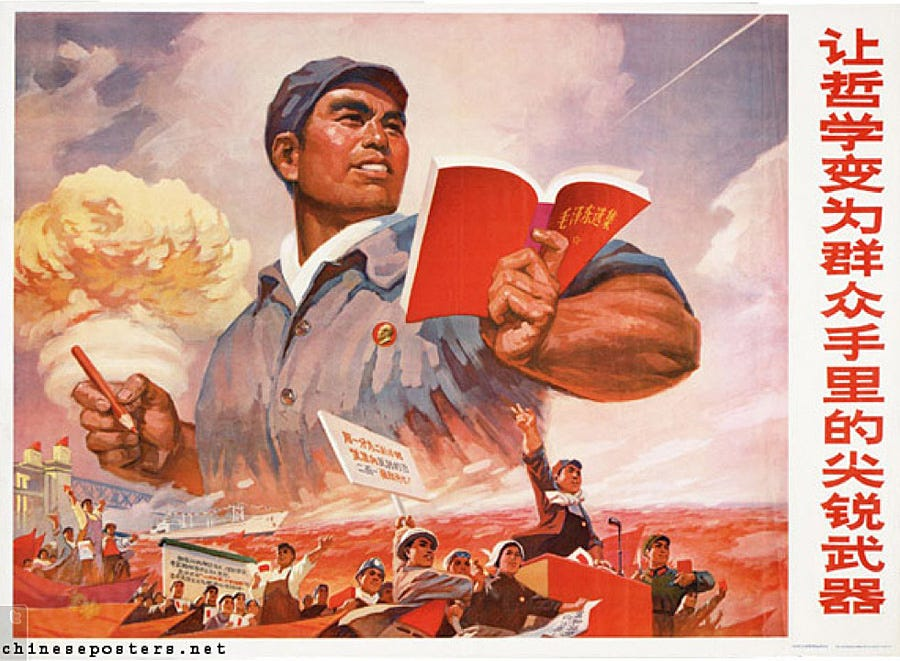
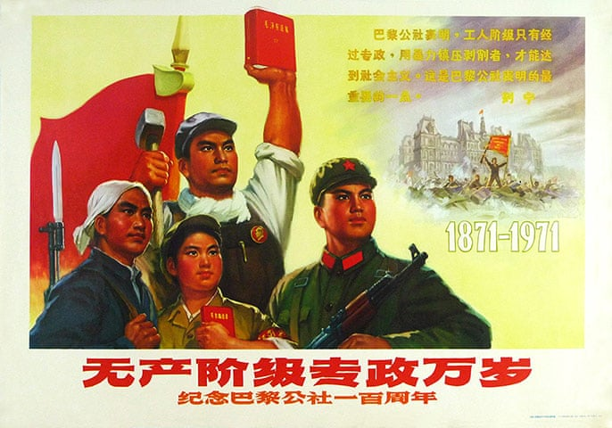
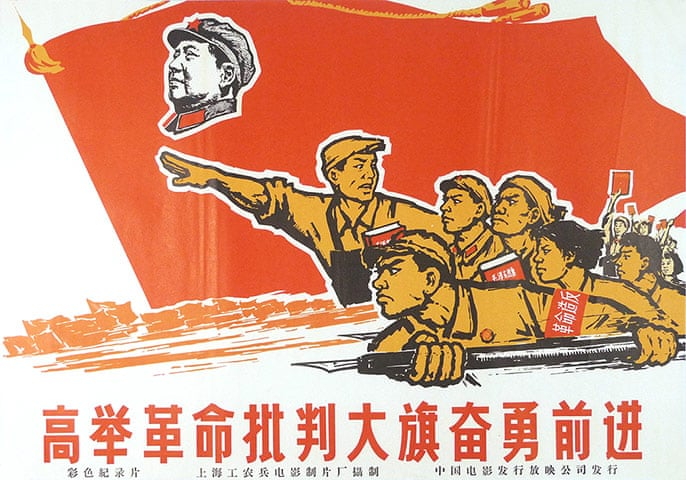

AP World Final Project
Table of Contents
1 Ruminations on the People's Republic of China
I am the second generation of my family to be born in China, my younger sister beat me by about twelve years.
My parents and grandparents are first generation Chinese immigrants likely from south east China given the dialect of Chinese we speak. My grandparents were farmers when they were younger and China and I won't show pictures, but my grandfather actually looked remarkably dashing in his prime.
That's besides the point. While there were few questions in total asked, the brunt of the information is based on analysis of small yet fairly significant questions that help paint a picture of how an approximate Chinese citizen would've lived during the late 20th century.
This interview was conducted with my parents and I asked them very simple questions, and prodded along with answers. I must paraphrase everything that is said because I cannot read, nor write Chinese, and nor am I able to type this properly without a large inconvenience.
Let's begin.
1.1 How was the Education System like in China?
Both of my parents ultimately agreed that the Chinese education system was not bad, and you get the textbook answer of it was very strict. Although in comparison to the American Education system, that answer is infinitely applicable. However if there was anything to note about what my parents said they stated things that implicated that the Chinese Education System was depedendent on being very studious. My mom admittedly not a very great student or even very booksmart was able to tell me that at the time literacy was an important topic, which appears to correlate with data of the literacy rating in China rising since 1982. She recalls having poetry classes where she would analyze classical poems. Not only did she have to analyze it however, but she also had to memorize it by heart, infact so much so that even today my mom was able to recite one of these poems. Unfortunately I cannot understand it due to language barrier.
My dad's experience in China was a bit more descriptive, and revealed more interesting things. He recalled more interesting memories of his time in school, including helping a friend cheat on his exam, and consequently resulting in a lower score for himself. He states he thought the education in China was very good, however when it came to how China was like he stated China was very poor in his time. There was fair mention of not having much food, even rice being somewhat rare which for a Chinese person is quite incredible. Instead he would eat a fried dough which was probably something like youtiao. He also told me that while he never really want on trips like mom did, he remembered having to do farming and living in large bunks with other people. This may be part of a collectivized farming system.
1.2 How was life outside of School? What did you do in your freetime?
Was there anything memorable?
The short answer was no. My mother stated that there was nothing really memorable, and there was basically no such thing as freetime. She didn't have anytime for these sorts of things and couldn't spend time with friends either. Her days were going to school, then coming home to do homework, and finally do chores and repeat again.
While this is more related to the other question, my mother did recall going on field trips during her school year. She states that they would go to a theater and watch films of military showcases. Essentially the only trips she had recalled were propaganda trips, more specifically the viewing of propaganda films. Actually to this day sometimes she does actually look at Chinese military marches, she did say she found them quite entertaining.
An Example of a Chinese Military Parade China's 70th Anniversary Military Parade
1.2.1 Context Comment / Analysis
The most interesting thing being significance of military propaganda during the time of the Cold War. The China that stands today is an heirloom of the fall of the Qing Dynasty, which hard to believe fell a little over a century ago, with the last people to have ever known it dying out only a couple years. The Qing Dynasty fell due to China's inability to cope with Western Superiority and due to internal political strife and made the way for new political movements.
First was Sun Yat-Sen who became a revolutionary due to his belief that simple reforms and initiatives such as the Hundred Days of Reform and Self Strengthening movements were simply not enough to fix China. He decided to find the Kuomintang / Guomindang and eventually the Kuomintang was engaged in a war with the newly formed Communist Party of China lead by Mao Zedong. This would be known as the Chinese Civil War and the result of this was the eviction of the Kuomintang to Taiwan and the formation of the People's Republic of China.
Why is this significant? Mao Zedong was a tyrant and a dictator, and a commonality that can be observed amongst many dictators and tyrants. They want to maintain power, and do so through fear or sometimes awe. Therefore a common tactic to showboat their power and strength is to perform many military displays. While these things are invariably directed at foreigners, these things also have a very large influence on the domestic population. This particularly true in China which has a history of ethnocentrism, and massive pride in it's in culture. In other words China has within it's histories a baked epic of nationalism, and after equally epic humiliations at the hands of the west, what better way to restore pride in it's people who have seen the effects of such humiliations than to show that the nation is rising once again?
Now about my dad's side of the answer which opened up to the probable implementation of a collectivized agricultural system. Another common pattern that occured as a result of the rise of communist governments in the 20th century was the centralized acquisition of resources. Specifically state-mandated collection of resources, which in many cases resulted in collectivized farms in which people would work on a farm, and the output of which would be given to the state. This was common in the Soviet Union and of course the People's Republic of China. Collectivized farming was implemented to allow for the equally state-motivated industrialization that most communist countries engaged in.
1.2.2 Examples of Military Parades used for similar propaganda effect
It's not unusual to use parades or ceremonies to radiate power or glory. However it is notable that in many historical authoritarian regimes their displaces are often much more extreme. As a result these are often the most impressive displays in the world, and quite approprietely make for perfect propaganda simply because of how perfect they are.
Soviet October Revolution Parade 1984 Soviet October Revolution Parade 1975 North Korean 70th Anniversay Parade 2018 North Korean Parade in 1997
All of these radiate grandiosity, and are mesmerizing in their own way…
1.2.3 Propaganda Posters of the time

Mao's Little Red Book

Book of Chairman Mao's Quotes

Call to action?
1.2.4 Continuity
What can be seen through these small remenants of an essentially bygone political experiment, there is one major consistency that remains throughout China's large history.
That which is the continued ethnocentrism of the Chinese people. Augmented by a more restrictive government, now this ethnocentrism is reinforced by state-censorship and fairly blatant propaganda. Many countries have overbearing nationalism, but few countries in the present day still defend their nationalism with censorship to the degree that modern China still does. In spite of the progress made since the time of the Soviet Union, China is still extremely conservative in it's values in practice.
In the late 19th century the ill-fated but well spirited Boxer's Rebellion was an example of that. While the "Boxers" were quite effective, their belief that their fists were harmonious and divinely supported lead to high death toll for the Chinese. Relating to martial arts in the modern day is the case of Chinese MMA Fighter Xu Xiaodong and his controversal mission to disprove the practicality Chinese Martial Arts, inspite of the fact the government actively censoring him and punishing him by making a him a social outcast for doing so. The government believes that much like the Boxers did, that they would not want to be susceptible to western influences and attempted to fight back, of course a government is much more effective against one man than a small society against relatively overequipped armies. If not something that could damage the pride of Chinese culture one can also observe the extremely minor case of comparing China's general secretary Xi Jinping likeness to that of beloved childhood figure Winnie the Pooh. In fact this is so damaging and insulting it is nationally censored. Of course this may also be seen as an attempt of an overbearing government carefully controlling media, although this is the most ridiculous case. That would also be another continuity that appears with restrictive regimes ( the careful control of information ), however that's not the topic of this. A more serious case of Chinese nationalism occurred with the Hong Kong and Mainland China issue.
If one takes it further another continuity that has been upheld indirectly as a result of this nationalism is the self-isolation of China. During the classical period, China was amongst the most powerful nations of the world and was rightfully the Middle Kingdom. For many dynasties this was true, however the advancements of Western Europeans during the Early Modern period lead to the replacement of most influencing states. In spite of all this, China still believed it was completely self sufficient and had no need to advance, even going as far as ordering fleets to show how advanced and glorious they were. Even though a mere few decades later the Western Europeans would enter the Age of Colonization and bolt past the rest of the world in terms of power.
Now in the modern era it isn't very difficult to see that this odd self-isolation, which only serves to detriment the country still stands. While of
course modern transportation reduces that gap, it's not difficult to see China still attempts to isolate as much as it can. It's no state secret that
China censors the usage of Google and it's platforms. Not only that but China has it's own intra-net as it were. Weibo, Wechat, Tecent's QQ, Baidu
are common household names in more developed areas of China. It's not the fact they exist which is concerning, but the fact they are the only options.
This "intra-net" allows companies which have associations with the government to monitor it's citizens and curate content carefully. Ultimately this results
in an echo-chamber as it were. It took hundreds of years and epic embarassments for China to finally accept that it needed to get with the times, and when
they tried that they were beaten viciously by stronger nations. The question is how long will it take before this echo-chamber will leak? Life in Modern China
is quite similar to classical China in this one way.
There is China, then everyone else.
There may not be a middle kingdom anymore, but China will always be the center of their world.